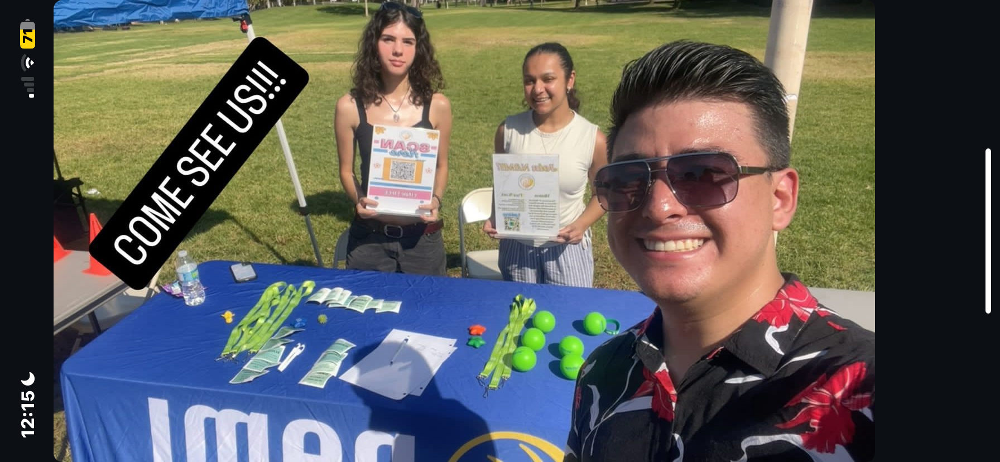
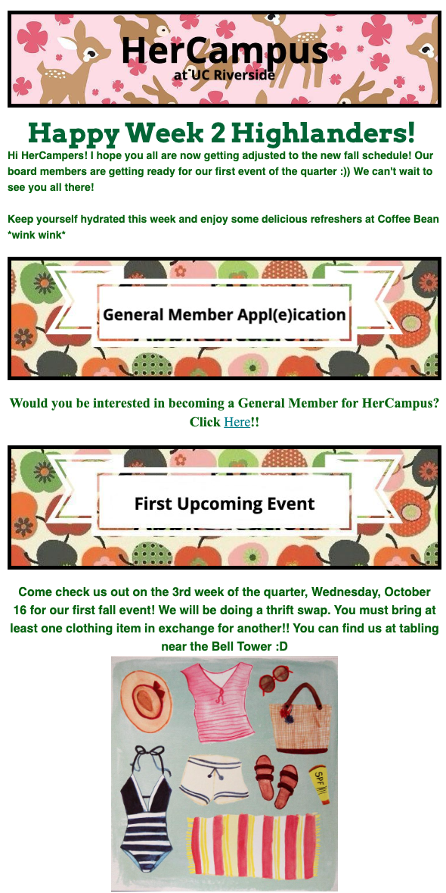

Portfolio




I am currently a student at the University of California, Riverside (UCR), where I balance multiple roles that reflect my passion for research, mental health advocacy, and community engagement. As a research assistant at UCR's Brain Game Center, I contribute to research exploring cognitive neuroscience and its applications in real-world settings. This position allows me to deepen my understanding of how the brain works, especially in relation to cognitive functions and learning, while honing my research and analytical skills. In addition to my research work, I serve as the treasurer of NAMI, the National Alliance on Mental Illness, at UCR. In this role, I help manage finances and assist in organizing events that aim to reduce stigma and provide support for students struggling with mental health issues. This position fuels my passion for promoting mental health awareness and contributing to a more supportive campus environment. I have also been involved in outreach efforts, collaborating with local businesses to establish fundraising partnerships. Beyond my work with NAMI, I am the marketing chair for HerCampus, a national online magazine with a chapter at UCR. In this position, I spearhead marketing campaigns, manage social media accounts, and help promote content that empowers and informs college women. It’s a creative role that allows me to blend my interests in writing, social media, and connecting with diverse communities. On top of my academic and extracurricular activities, I am also an usher for the Department of Music at UCR, where I support events and performances that bring music and culture to the campus community. This position has given me a greater appreciation for the performing arts and an opportunity to engage with various aspects of UCR’s cultural life.
• Spearheaded innovative research projects focused on cognitive enhancement through game-based learning
• Played a key role in data collection, analysis, and interpretation to drive impactful insights
• Collaborated with a multidisciplinary team to push the boundaries of neuroscience research
• Delivered exceptional guest services, ensuring seamless and enjoyable experiences for event attendees
• Coordinated seating logistics and ticketing with precision during high-profile concerts and performances
• Created a welcoming atmosphere while facilitating smooth event operations
• Strategically managed the club's finances, optimizing budget allocation for mental health initiatives
• Led fundraising efforts, forging partnerships with local businesses to fuel impactful outreach programs
• Ensured transparent and efficient financial reporting, enhancing the club's sustainability
• Engineered buzz-worthy marketing campaigns that elevated HerCampus’ brand visibility across campus
• Cultivated a thriving online presence, engaging with thousands of followers on social media platforms
• Directed creative promotional strategies that amplified event attendance and participation
• Assisted in setting up church festivals, ensuring all logistical details were addressed
• Distributed food to community members after services, fostering a spirit of generosity
• Helped prepare food and complete various tasks required before church services, supporting the church's mission